eg. show 2n2+3n+11∈O(n2) from first principles.
we need to find c and n0 so that we have 0≤2n2+3n+11≤cn2,∀n≥n0.
can let n0=1, so 1≤n⟶1≤n2⟶11≤11n2, 1≤n⟶n≤n2⟶3n≤3n2, 2n2≤2n2. so 2n2+3n+11≤11n2+3n2+2n2=16n2, so c=16. □
defn.(Omega-notation)f(n)∈Ω(g(n)) if there exist constants c>0 and n0>0 such that 0≤c∣g(n)∣≤∣f(n)∣ for all n≥n0. (lower bound)
defn.(Theta-notation)f(n)∈Θ(g(n)) if f(n)∈O(g(n)) and f(n)∈Ω(g(n)). (tight bound)
eg. show 21n2−5n∈Ω(n2) from first principles.
let n0=20, have n≥20⟶n2≥20n⟶41n2≥5n⟶41n2−5n≥0. so 21n2−5n=41n2+(41n2−5n)≥41n2. let c=41. □
defn.(omega-notation)f(n)∈o(g(n)) if for all constants c>0, there exists a constant n0>0 such that ∣f(n)∣<c∣g(n)∣,∀n≥n0.
defn.(theta-notation)f(n)∈ω(g(n)) if for all constants c>0, there exists a constant n0>0 such that 0≤c∣g(n)∣<∣f(n)∣,∀n≥n0.
notation
meaning
eg
Big O
asymptotically not bigger
Big Omega
asymptotically not smaller
Big Theta
asymptotically the same
small o
asymptotically strictly smaller
small omega
asymptotically strictly greater
theorem.f(n)∈Θ(g(n))⟺g(n)∈Θ(f(n)) proof. there exist n0,c1,c2 with c1∣g∣≤∣f∣≤c2∣g∣,∀n≥n0, so c21∣f∣≤∣g∣≤c21∣f∣,∀n≥n0. □
theorem.f(n)∈O(g(n))⟺g(n)∈Ω(f(n))
theorem.f(n)∈o(g(n))⟺g(n)∈ω(f(n))
theorem.f(n)∈o(g(n))⟹f(n)∈O(g(n))
theorem.f(n)∈o(g(n))⟹f(n)∈/Ω(g(n)
theorem.f(n)∈ω(g(n))⟹f(n)∈Ω(g(n))
theorem.f(n)∈ω(g(n))⟹f(n)∈/O(g(n))
theorem.(identity rule)f(n)∈Θ(f(n))
theorem.(max rules) suppose f(n)>0 and g(n)>0 for all n≥n0, then
O(f(n)+g(n))=O(max{f(n),g(n)})
Ω(f(n)+g(n))=Ω(max{f(n),g(n)})
proof. (1) let h∈O(f+g), then ∃c,n0>0 with ∣h∣≤c∣f+g∣≤2c∣max{f,g}∣,∀n≥n0 so h∈O(max{f,g}). let h∈O(max{f,g}), then ∃c,n0>0 with ∣h∣≥c∣max{f,g}∣=2c∣2max{f,g}∣≥2c∣f+g∣,∀n≥n0, so h∈O(f+g). □
theorem.(transitivity)
if f(n)∈O(g(n)) and g(n)∈O(h(n)) then f(n)∈O(h(n))
If f(n)∈Ω(g(n)) and g(n)∈Ω(h(n)) then f(n)∈Ω(h(n))
proof. (1) there exist c1,n1>0 with ∣f∣≤c1∣g∣,∀n≥n1, there exist c2,n2 with ∣g∣≤c2∣h∣,∀n≥n2. take N=max{n1,n2} we have ∣f∣≤n1n2∣h∣,∀n≥N. □
theorem. suppose f(n)>0 and g(n)>0 for all n≥n0, suppose L=limn→∞g(n)f(n), then
f(n)∈⎩⎪⎨⎪⎧o(g(n))Θ(g(n))ω(g(n)) if L=0 if 0<L<∞ if L=∞
the other side does not hold.
eg. let f(n) be a polynomial f(n)=cdnd+cd−1nd−1+⋯+c1n+c0 for some cd>0, then f(n)∈Θ(nd). proof.
eg. show n(2+sinnπ/2) is Θ(n). proof. note limn→∞nn(2+sinn2π)=limn→∞(2+sinn2π) does not exist.
note if n0=1, then for all n≥n0 we have −1≤sinn2π≤1, so add sides by 2 and times n, we have n≤n(2+sinn2π)≤3n. □
if f(n)∈Θ(g(n)), then the growth rates of both functions are the same.
if f(n)∈o(g(n)), then the growth rate of f(n) is less than the growth rate of g(n)
if f(n)∈ω(g(n)), then the growth rate of f(n) is greater than the growth rate of g(n)
we write logn to represent log2n=ln2lnn
eg. compare the growth rates of logn and n. limn→∞nlogn=limn→∞1nln21=limn→∞nln21=0, so logn∈o(n) by LH.
eg. compare the growth rates of (logn)c and nd where c,d>0 are arbitrary.
repeatedly apply LH we have limn→∞nd(logn)c=limn→∞(ln2)cdcndc!=0 so (logn)c∈o(nd).
eg. double the size of input for linearithmic algorithm, what's resultant running time?
have T(n)=cnlogn, then T(2n)=c2nlog2n=2cn(logn+log2)=2cnlogn+2cn=2T(n)+2cn. not bad
techniques for analysis
running time depends on the input size n
identify elementary operations that require Θ(1) time
the complexity of a loop is expressed as the sum of the complexities if each iteration of the loop
nested loops: start with the innermost loop and proceed outwards
eg.
Test1(n):
auto sum = 0// Theta(1) --> c_1for i = 1, n: // \sum{i=1,n} Afor j = i, n: // \sum{j=i,n} c_2 --> A
sum = sum + (i-j)^2// Theta(1) --> c_2return sum // Theta(1) --> c_3
eg. show f(n)=∑i=1n∑j=in∑k=ji1∈Θ(n3) f(n)≤∑i=1n∑j=1n∑k=1n=n3∈O(n3) f(n)≥∑i=1n/3∑j=2n/3+1n∑k=n/3+12n/3=...∈Ω(n3)
Week 2. May 18
The running time may depend on the characteristic of the input
defn. let TA(I) denote the running time of an algorithm A on instance I of length n,
best-case complexity take the best I, with shortest time
worst-case complexity take the worst I, with longest time
average-case complexity take the average I
we assume the worst-case complexity if not specified.
eg.
Test(A, n):
for i = 1, n-1: // \sum_{i=1,n-1} Mauto j = i
while j > 0and A[j] > A[j-1]: // M (worst: if j A[j] always > A[j-1]
swap(A[j], A[j-1]) // need to loop from 0 to i)
j = j-1//
worst case: Θ(n2)
it is important not to try and make comparison between algorithms using O-notation
if A1, A2 solves same problem, A1 has worst O(n^3), A2 has worst O(n^2)
we cannot conclude A2 is more efficient than A1 for all input
the worst-case runtime may only be achieved on some instances
O is upper bound. A1 may have O(n).
should always use Θ-notation
mergesort
design
split A into two subarrays AL consists of the first ⌈2n⌉ elements and AR consists of the last ⌊2n⌋ elements.
recursively call mergesort on AL and AR
AL and AR are sorted, merge them into a single sorted array (merge two sorted arrays)
mergesort(A[n], l = 0, r = n-1):
if r <= l: // \Theta(1)return// \Theta(1)else:
auto m = (r+l)/2// \Theta(1)
mergesort(A, l, m) // T(n/2)
mergesort(A, m+1, r) // T(n/2)
merge(A, l, m, r) // ?// assume A[l:m], A[m+1:r] are sorted
merge(A[n], l, m, r):
auto S = // auxiliary array of size nauto S[l:r] = A[l:r] // copy A[l,...,r] to S[l,...,r]// this is step 1, taking \Theta(n)int iL = l
int iR = m+1for k = l, r: // \sum_{k=l,r}if iL > m:
A[k] = S[iR++]
elseif iR > r:
A[k] = S[iL++]
elseif S[iL] <= S[iR]:
A[k] = S[iL++]
else:
A[k] = S[iR++]
merge takes Θ(r−l+1), which is Θ(n) (!)
so the total time for mergesort should be T(n)=2T(2n)+Θ(n)
analysis
let T(n) denote the time to run mergesort on an array of length n
step 1 takes Θ(n)
step 2 takes T(⌈2n⌉)+T(⌊2n⌋)
step 3 takes Θ(n)
the recurrence relation for T(n) is:
T(n)={T(⌈2n⌉)+T(⌊2n⌋)+Θ(n)Θ(1) if n>1 if n=1
it suffices to consider the exact relation, with constant factor c replacing Θ's
T(n)={T(⌈2n⌉)+T(⌊2n⌋)+cnc if n>1 if n=1
the sloppy recurrence (with floors and ceilings removed) is:
T(n)={2T(2n)+cnc if n>1 if n=1
the exact and sloppy recurrences are identical when n is power of 2
at i-th level. since when n=1, we have T(1)=c, we can solve 1=2jn and get j=logn, so
T(n)=2jT(1)+jcn=2jc+jcn=cn+logncn∈Θ(nlogn)
solve with method 2
+----+cn +---+ level 0: cn
v v
+------+cn/2 cn/2+-----+ level 1: 2*cn/2=cn
| + + |
v v v v
+--+ cn/4 cn/4 cn/4 cn/4 +-+ level 2: 4*cn/4=cn
| |
..... ...... ...... .....
| | ...
v v
c c ....... c c level logn: n*c=cn
first mergesort call have time cn (for merge), then it calls two mergesorts with size n/2, each of which has time cn/2, ...
all rows in fact sums to cn, there are logn+1 rows, so T(n)=(logn+1)cn
useful formulas
some recurrence relations
recursion
resolves to
eg
T(n)=T(2n)+Θ(1)
T(n)∈Θ(logn)
binary search
T(n)=2T(2n)+Θ(n)
T(n)∈Θ(nlogn)
mergesort
T(n)=2T(2n)+Θ(logn)
T(n)∈Θ(n)
heapify
T(n)=T(cn)+Θ(n) ∃0<c<1
T(n)∈Θ(n)
selection
T(n)=2T(4n)+Θ(1)
T(n)∈Θ(n)
range search
T(n)=T(n)+Θ(1)
T(n)∈Θ(loglogn)
interpolation search
useful sums
arithmetic sequence
i=0∑n−1(a+di)=na+2dn(n−1)∈Θ(n2),d=0
geometric sequence
i=0∑n−1arn=⎩⎪⎪⎪⎪⎨⎪⎪⎪⎪⎧ar−1rn−1an−−a1−r1−rn∈Θ(rn)∈Θ(n)∈Θ(1) if r>1−− if r=1−− if 0<r<1
harmonic sequence
i=1∑ni1=lnn+γ+o(1)∈Θ(logn)
few more
i=1∑ni21=6π2∈Θ(1)
i=1∑nik∈Θ(nk+1),k≥0
useful formulas
x−1<⌊x⌋≤x
x−1≤⌈x⌉<x
eg.log(n!)=logn+log(n−1)+...+log1∈Θ(nlogn) proof.
we have f(n)=logn+...+log1≤logn+...+logn=nlogn∈Θ(nlogn).
if we choose n≥4, then logn≥2 so logn−2≥0⟹2logn−2≥logn⟹logn−1≥21logn⟹logn−log2≥21logn⟹log2n≥21logn so 2nlog2n≥212nlogn.
so f(n)≥logn+...log2n≥log2n+...+log2n=2nlog2n≥41nlogn∈Ω(nlogn). □
eg. show T(n)=2T(2n)+c reduces to Θ(n). T(n)=2iT(2in)+(20+21+...+2i−1),∀i. let i=logn we have T(n)=nc+∑k=0logn−12k=nc+2−12logn−1=nc+(n−1)∈Θ(n). □
a binary tree is either empty, or consists of a node and two binary trees left/right subtrees
the height of a non-empty tree is the length of the longest path from root to node. the height of the empty tree is -1, the height of tree with one node is 0.
a binary tree with n odes has height at least log(n+1)−1∈Ω(logn)
pqueue
insert: inserting an item tagged with a priority
deleteMax: removing the item of highest priority
priority is also called key
application: 'todo' list, sorting
use pqueue to sort
PQsort(A[n]):
auto PQ = new priority_queue
for k = 0, n-1:
PQ.insert(A[k], key=A[k]) // fill elements to pqueuefor k = n-1, 0, -1:
A[k] = PQ.deleteMax()
run-time: O(∑i=0ninsert(i)+∑i=0ndeleteMax(i)), depending on how we implement the pqueue
realizations of pqueues
realization 1: use unsorted array
insert: O(1)
deleteMax: O(n), because we search the array for one with max key
PQsort with this realization yields selection sort, runtime is O(n^2)
realization 2: use sorted arrays
insert: O(n), because we need to iterate elements to find where to put the new item, and probably shift existing items to give empty space
deleteMax: O(1), simply remove the last entry
PQsort with this realization yields insertion sort, runtime is O(n^2)
binary heap
a certain type of binary tree with following properties
structural: all the levels of a heap are completely filled except (possibly) for the last level. the filled items in the last level are left-justified.
heap-order: for any node i, the key of the parent of i is larger than or equal to key of i.
the max name is max-oriented binary heap
lemma. the height of a heap with n nodes is Θ(logn) proof. for a heap of height h, we have at least level 0(full) + level 1(full) + ... + level h-1(full) + level h(only 1) = 1+2+4+...+2h−1+1=(2h−1)+1=2h nodes. and at most (all filled) = 1+2+4+...+h=2h+1−1 nodes.
hence we have 2h≤n≤2h+1−1≤2h+1, which is h≤log(n)≤h+1. rearrange we have log(n)−1≤h≤log(n) so h∈Θ(logn). □
storing heaps in arrays
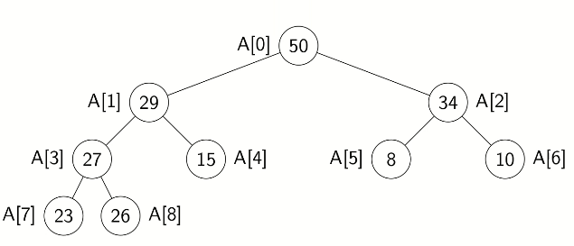
let H be a heap of n items and let A be an array of size n. store root in A[0] and continue with elements level-by-level from top to bottom, in each level left-to-right
the root node is at index 0
the left child of node i is node 2i+1
the right child of node i is node 2i+2
the parent of node i is node ⌊2i−1⌋
the last node is n−1
Week 3. May 25
insert in heaps
insert the node to the last position (n-1), it may break ordering. need to fix-up
if it breaks ordering, swap with its parent, continue until it is less than parent
the new item "bubbles up"
// k is an index corresponding to a node
fix_up(A[], k):
whileparent(k) exist and A[parent(k)] < A[k]: // worst: swap until it becomes rootswap(A[k], A[parent(k)])
k = parent(k)
insert(A[], n, item):
increase size of A by 1auto l = last(n) // n-1
A[l] = item
fix_up(A, l)
worst time = O(height of heap) = (logn)
deleteMax in heaps
the max item of a heap is the root node
we replace root by the last leaf (n-1). breaks ordering. need to fix-down
swap this new root with the larger of its children, continue until it is larger than children, or it becomes leaf
// k is an index corresponding to a node
fix_down(A[], n, k):
while k is not leaf:
// find child with larger key// there can't be case when left doesn't exist and right existauto j = leftchild(k)
if j != last(n) and A[j+1] > A[j]:
j = j+1if A[k] >= A[j]: break
swap(A[j], A[k])
k = j
deleteMax(A[], n):
auto res = A[root()]
swap(A[root()], A[last(n)])
decrease size by 1// remove original root (now last)
fix_down(A, n-1, root())
return res
worst time = O(height of heap) = (logn)
pqsort
PQsortWithHeap(A[n]):
auto hp = new heap
for k = 0, n-1:
hp.insert(key=A[k]) // just insert keys, no itemsfor k = n-1, 0, -1:
A[k] = hp.deleteMax()
both insert and deleteMax is O(logn), so it takes O(nlogn) time. it takes O(n) extra space
heapsort
problem: given n items all at once, build a heap containing all of them
naive: insert item one by one by calling fixup
use fixdowns, start from second bottom
heapify(A[n] /* A is regular array */):
for i = parent(last(n)), 0, -1:
fix_down(A, i)
// worst time: O(n)
the running time of heapify T(n) is Θ(n). proof for n=2h+1−1 (complete heap).
T(n)∈Θ(worst case number of swaps)=Θ(level h, swap 0 times each + level h-1, 1 time each, + ... + level 0)=Θ(0⋅2h−0+1⋅2h−1+2⋅2h−2+...+h⋅2h−h)=Θ(2hi=0∑h2ii)=Θ(2h)=Θ(n)
where each level h−i has 2h−i nodes. and ∑i2ii≤2
we can use fix_ups, however, "The running time is at least nlogn. You can see this by noting there are n over two elements in the bottom layer, each of which are at a depth logn, which is the cost of a fixup operation."
heapsort(A[], n):
heapify(A) // O(n)// repeatedly find maxwhile n > 1: // O(nlongn)// delete max (put it to last, and fixdown skips it)
swap(A[root()], A[last(n)])
n--
fix_down(A, n, root())
takes O(nlogn) time
find smallest item
problem: find the k-th smallest item in an array A of n distinct numbers
sol1: make k passes through the array, deleting the minimum num each time
Θ(kn)
sol2: sort A, return A[n-k]
Θ(nlogn)
sol3: scan the array and maintain the k smallest numbers seen so far in a max-heap, finally take the root
Θ(nlogk)
sol4: create a min-heap with heapify(A). call deleteMin(A) k times
Θ(n+klogn) best
sorting and randomized algorithms
selection problem: given an array A of n numbers, and 0≤k<n, find the element that would be at position k of the sorted array
special case: median finding: k=⌊2n⌋
selection can be done with heaps with Θ(n+klogn) (sol4)
median-finding with this is Θ(nlogn) (same as sorting first)
quick-select
choose_pivot(A): return an index p in A. we use the pivot to rearrange the array
// simplest
choose_pivot(A[]) => A.size - 1
partition(a, p): rearrange A and return pivot index i so that
all items in A[0 : i-1] are less/eq than v
pivot value is in A[i]
all items in A[i+1 : n-1] are greater than v
easy partition: create smaller, equal, larger arrays separately, then concatenate them. O(n) time and space
efficient in-place partition
keep swapping the outermost wrongly-positioned pairs
partition(A[n], p):
swap(A[n-1], A[p])
auto i = -1// begin from leftauto j = n-1// begin from rightauto v = A[n-1] // pivot indexwhiletrue:
// stop when A[i] is bigger than pivotdo: i++ while i < n and A[i] < v
// stop when A[j] is smaller than pivotdo: j-- while j > 0and A[j] > v
// break if two pointers overlap, where two elems are in correct positionif i >= j: break// swap wrongly positioned oneselse: swap(A[i], A[j])
swap(A[n-1], A[i])
return i
takes O(n).
quick-select 1
quick_select1(A[], k):
// selects kth element as if A is sortedauto p = choose_pivot(A)
auto i = partition(A, p)
if i == k:
return A[i]
elseif i > k:
return quick_select1(A[:i-1], k)
else:
return quick_select1(A[i+1:], k-i-1) // note index relative to new subarray
running time analysis:
worst: list is sorted eg [1,2,3,4], and want to select 1st elem. choose pivot to be 4, then after partition the array is the same, qs recurses on [1,2,3], ... recursive call always have size n-1.
i is the choice of pivot (0, ..., n-1). there are n possibilities, so 1/n
if i < k, recurse on right subarray, cn+T(n-i-1,k-1-i)
if i = k, only partition, cn
if i > k, recurse on left subarray, cn+T(i,k)
theorem.T(n,k)≤4cn. proof. use induction. base: if n=1, then T(1,k)=c≤4c⋅1.
inductive:
T(n,k)≤cn+n1(i=0∑k−14c(n−i−1)+i=k+1∑n−14ci)=cn+n4c(i=0∑k−1n−i=0∑k−1(i+1)+i=k+1∑n−1i)=cn+n4c(nk−2(1+k)k+2(k+1+n−1)(n−1−k))≤cn+n4c(nk−k2+2n2)=cn+n4c2n2+n4c(nk−k2)(maximized when k=2n)≤cn+2cn+n4c(n2n−4n2)=cn+2cn+n4c(4n2)=4cn
□
that is T∈O(n).
Week 4. June 1
randomized algorithm
once which relies on some random numbers in addition to the input
the runtime depends on the input and the random number used
goal: shift the dependency of runtime from what we can't control (input) to what we can control (random numbers)
defn. the expected running time is
Texp(I)=E[T(I,R)]=R∑T(I,R)⋅Pr[R]
where T(I,R) is the running time of a randomized algorithm A for an input instance I and the sequence of random numbers R.
randomized quick-select
goal: create a randomized version of quick_select for which all input has the same expected runtime
first idea: randomly shuffle the input
shuffle(A[]):
for i = 0, n-2:
swap(A[i], A[i+random(n-i)])
assuming the random(n) returns integers uniformly from 0, 1, ..., n-1.
drawback: costly, tricky to analysis
second idea: random pivot by changing pivot selection
choose_pivot2(A[n]):
return random(n)
quick_select2(A[], k):
auto p = choose_pivot2(A)
...
the probability of choosing a pivot index i from 0 to n is n1. so the analysis is the same as average case. expected runtime is Θ(n).
quick-sort
quick_sort1(A[n]):
if n <= 1: returnauto p = choose_pivot1(A) // last elementauto i = partition(A, p)
quick_sort1(A[:i-1])
quick_sort(A[i+1:])
let T(n) be the runtime for quick_sort1, then it depends on the pivot index i. we have
T(n)=Θ(n)+T(i)+T(n−i−1)
worst-case: we always have i=0 or n-1
T(n){T(n−1)+cnc , x≥2 , x=1
similar to worst-case quick select T(n)∈Θ(n2).
best-case: we always have i = ⌊2n⌋ or ⌈2n⌉
T(n)=⎩⎪⎨⎪⎧T(⌊2n−1⌋)+T(⌈2n−1⌉)+cnc,n>1,n=1
resolves to Θ(nlogn).
average-case: there are (n-1)! permutations have to pivot indices i
T(n)=n!1i=0∑n−1size of I is n, I has pivot i∑running time for instance I≤n!1i=0∑n−1(n−1)!(cn+T(i)+T(n−i−1))=cn+n1i=0∑n−1(T(i)+T(n−i−1))
by using randomized choose_pivot2, the expected time for quicksort2 is O(nlogn).
the auxiliary space is Ω (recursion depth)
this is Θ(n) in worst-case
it can be reduced to O(logn) worst-case by recurring in smaller sub-arrays first and replacing the other recursion by while loop
once should stop recursing when n≤10. run insertion sort at then end then sorts everything in O(n) since all items are within 10 units of their required position
arrays with many duplicates can be sorted faster by making partition to produce 3 subsets: <=v, ==v, >=v
tricks that apply in many situations:
pass only range of indices instead of full array
avoid recursion altogether by keeping an explicit stack
quick_sort3(A[n]):
auto S = newstack<pair<int, int>>
S.push({0, n-1})
while S is not empty:
auto [l, r] = S.pop()
while r-l+1 > 10:
auto p = choose_pivot2(A, l, r)
auto i = partition(A, l, r, p)
if i-l > r-i:
S.push({l, i-1})
l = i+1else:
S.push({i+1, r})
r = i-1
insertion_sort(A)
lower bounds for sorting
comparison-based sorting lower bound is O(nlogn)
the comparison model data can only be assessed in two ways:
compare
swap/copy
theorem. any correct comparison-based sorting algorithm requires at least Ω(nlogn) comparison operations to sort n distinct items. proof. let h be the max number of comparisons performed by the algorithm. in the decision tree, the number of leaves (permutations) ≥n!, and ≤2h. so 2h≤n!⟹h≥log(n!)=logn+log(n−1)+...+log(1)≥logn+log(n−1)+...log(2n+1)≥2nlog(2n)=2nlogn−2n∈Ω(nlogn). □
non-comparison-based sorting can be O(n) under assumptions
assume keys are numbers in base R (radix)
most common: 2, 10, 16, 128, 256
assume all keys have the same number m of digits
eg: (R=4) [123, 230, 021, 320, 210, 232, 101]
can sort base don individual digits
bucket sort (single digit)
sorts numbers by a single digit
create a "bucket" for each possible digit: array of linked lists, length R
// A: array of size n, contains numbers with digits in {0, ..., R-1}// d: index of the digit by which we wish to sort
bucket_sort(A[n], d):
auto B = newarray<list<int>>(length=R) // space: R+nfor i = 0, n-1:
B[dth digit of A[i]].append(A[i])
auto i = 0for j = 0, R-1:
while B[j] is not empty:
A[i++] = B[j].front
B[j].front = B[j].next
this is stable: equal items stay in original order
runtime: O(n+R), auxiliary space: O(n+R)
no need to maintain linked lists
count sort:
key_indexed_count_sort(A[n], d):
// count how many each kind there areauto count = newarray(size=R, fill=0)
for i = 0, n-1:
count[dth digit of A[i]]++
// find left boundary of each kindauto idx = newarray(size=R)
idx[0] = 0for i = 1, R-1:
idx[i] = idx[i-1] + count[i-1]
// move to new array in sorted order, then copy backauto aux = newarray(size=n)
for i = 0, n-1:
aux[ idx[dth digit of A[i]] ] = A[i]
idx[dth digit of A[i]]++
A = aux
MSD-radix-sort (most significant digit)
sorts by leading digit, then each group by next digit, etc
// sort array of m-digit radix-r numbers recursively
msd_radix_sort(A[n], l=0, r=n-1, d=1/* digit */):
if l < r:
key_indexed_count_sort(A[l:r], d)
if d < m:
for i = 0, R-1:
auto [li, ri] = // boundaries of ith bin (A[li:ri] all have dth digit i)
msd_radix_sort(A, li, ri, d+1)
li, ri are automatically computed with count_sort
drawback: many recursions
aux space: O(n+R+m) (for recursion stack)
LSD-radix-sort
use the stability property
lsd_radix_sort(A[n]):
for d = m, 1, -1:
key_index_count_sort(A, d)
loop-invariant: A is sorted with original same-digit order preserved
time: O(m(n+R))
aux space: O(n+R)
achieves O(nlogn) if input is special
Week 5. June 9
dictionary ADT
a dictionary is a collection of items, each of which contains
a key
some data
and is called a key-value pair. keys can be compared and are (typically) unique
operations:
search(k)
insert(k, v)
delete(k)
elementary implementations
common assumptions
dictionary has n KVPs
each KVP uses constant space (O(1))
keys can be compared in constant time (O(1))
using unordered array/linked list:
search O(n)
delete O(1)
delete O(n) (need to search)
using ordered array:
search O(logn) (via binary search)
insert O(n) (have to move elements)
delete O(n)
binary search trees
structure
all internal nodes have two children
every internal node stores a KVP
every external node stores empty tree (usually not shown)
ordering
every key k in T.left is less than the root key
every key k in T.right is greater than the root key
BST_search(k)
start at root, compare k to current node. stop if found or node is external, else recurse at child
BST_search(root, k):
if root == NULL : not found
elseif k == root.key: return root
elseif k < root.key : return BST_search(root.left, key)
elsereturn BST_search(root.right, key)
BST_insert(k, v)
search k. it is not found but the pointer is at right place, just add
BST_insert(root, k, v):
if root == NULL: returnnew node(k, v)
if k < root.key: root.left = BST_insert(root.left, k, v)
else : root.right = BST_insert(root.right, k, v)
return root
BST_delete(k)
first search for the node x that contains the key
if x is a leaf, just delete it
if x has one child, move child up
else, swap key at x with its inorder successor (or predecessor) node and then delete that node
BST_delete(root, k):
/* locate k */if root == NULL: return root
if k < root.key:
root.left = BST_delete(root.left, k)
return root
else:
root.right = BST_delete(root.right, k)
return root
/* k has one child */if root.left == NULL:
auto &tmp = root.right
delete root
return tmp
elseif root.right == NULL:
auto &tmp = root.left
delete root
return tmp
/* k has two children */else:
auto succ_parent = root
/* find successor */auto succ = root.right
while succ.left != NULL:
succ_parent = succ
succ = succ.left
if succ_parent != root:
succ_parent.left = succ.right
else:
succ_parent.right = succ.right
swap(root, succ)
delete succ
return root
all three operations cost Θ(h). for h
worst case: n−1∈Θ(n) (tree is linear)
best case: Θ(logn) as any binary tree with n nodes has height >= log(n+1)-1
average case: can show Θ(logn)
AVL tree
is a BST with an additional height-balance property
the heights of the left subtree L and right subtree R differ by at most 1
at each non-empty node, require height(R)-height(L)=-1,0,1
-1 means tree is left-heavy
0 means tree is balanced
1 means tree is right-heavy
need to store at each node the height of the subtrees rooted at it
it is sufficient to store height(R)-height(L). uses fewer bits, but code gets complicated
eg.
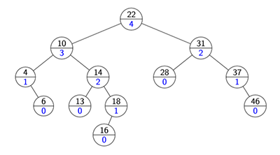
theorem. any AVL tree with n nodes has height h∈Θ(logn). proof. define N(h) to be the least number of nodes in a height-h AVL tree. we have N(0)=1,N(1)=2,N(2)=4,.... suppose a tree has height h, wlog assume its left subtree has height h−1, then by defn of AVL tree its right subtree has to have height h−1 or h−2. since we are finding a lower bound, take h−2. hence we have N(h)=N(h−1)+N(h−2)+1.
will show by induction that N(h)≥(2)h. base: h=0, we have 1≥1. inductive: N(h)=N(h−1)+N(h−2)+1≥2N(h−2)≥IH(2)2(2)h−2=(2)h.
so we have n≥N(h)≥(2)h⟹n≥(2)h⟹h≤log2n=2logn∈O(logn). the other direction is known. □
AVL_insert(k, v)
first insert (k, v) into T with the usual BST insertion
assume this returns the new leaf z where the key was stored
then move up the tree from z, updating heights
if the height difference becomes +-2 at node z, then z is unbalanced. must fix the tree to re-balance
AVL_insert(root, k, v):
auto &z = BST_insert(root, k, v)
z.height = 0while z != NULL:
setHeightFromChildren(z)
if |z.left.height - z.right.height| == 2:
AVL_fix(z) // laterbreakelse:
z = z.parent
setHeightFromChildren(u):
u.height = 1 + max(u.left.height, u.right.height)
this is applied at node z with balance +-2, but the subtrees at z are AVL trees. it makes the subtree rooted at z balanced
AVL_fix(z):
// find child and grand-child that go deepest
Node &x, &y
if z.right.height > z.left.height:
y = z.right
else:
y = z.left
if y.right.height > y.left.height:
x = y.right
else:
x = y.left
// apply appropriate rotation to restructure at x,y,zif x.key < y.key < z.key:
rotate_right(z)
elseif y.key < x.key < z.key:
rotate_left(y)
rotate_right(z)
elseif z.key < x.key < y.key:
rotate_right(y)
rotate_left(z)
else/*if z.key < y.key < x.key*/:
rotate_left(z)
// used for left-left imbalance
rotate_right(z):
// rotate current subtreeauto &y = z.left
/* make y.right the new left child of z *//* make y the new root of the subtree *//* make z the new right child of y */
setHeightFromChildren(z)
setHeightFromChildren(y)
// update the parent that originally points to zauto p = z.parent
if p != NULL:
if z == p.left:
p.left = y
else:
p.right = y
else:
/* make y the overall root of the tree */// used for right-right imbalance
rotate_left(z):
/* same as rotate_right, swap left and right */
when left-left imbalance appears, rotate-right on z is used. in this case x<y<z
when right-right imbalance appears, rotate-left on z is used. in this case z<y<x
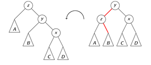
when left-right imbalance appears, double right rotation is used. first a left rotation on y, then a right rotation on z. in this case y<x<z
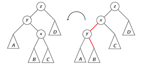
when right-left imbalance appears, double left rotation is used. first a right rotation on y, then a left rotation on z. in this case z<x<y
AVL_delete(k)
assume BST_delete returns the place where structural change happened ie the parent z of the node that got deleted. (this is not necessarily near the one that had k)
go back up to root, update heights, and rotate if needed
AVL_delete(root, k):
auto &z = BST_delete(root, k):
while z != NULL:
setHeightFromChildren(z)
if |z.left.height - z.right.height| == 2:
AVL_fix(z)
// no break here - may have to call more than once
z = z.parent
AVL_search: just like in BSTs the cost is Θ(height)
AVL_insert: total cost Θ(height)
AVL_fix restores the height of the tree it fixes to what it was
AVL_fix is called at most once
AVL_delete: total cost (height)
AVL_fix may be called Θ(height) times
total cost for all operations is Θ(height)=Θ(logn)
Week 6. June 16
dictionary (continued)
using binary search trees:
search, insert, delete O(height)
remark: average-case height of a BST is O(logn), can turn into expected height via randomization
using AVL trees:
search, insert, delete O(logn)
skip lists
a hierarchy S of ordered linked lists (levels) S0,S1,...,Sh.
each list Si contains the special keys −∞ and +∞ (sentinels)
list S0 contains the KVPs of S in non-decreasing order (the other lists store only keys, or links to nodes in S0)
each list is a subsequence of the previous one ie S0⊇S1⊇...⊇Sh.
list Sh contains only sentinels
each KVP belongs to a tower of nodes
there are (usually) more nodes than keys
the skip list consists of a refrence to the topmost left node
each node p has references p.after and p.below
search(k)
get_predecessors(k):
// finds all nodes before where k would beauto &p = topmost left sentinel
auto P = newstack<node>
P.push(p)
// go down & right as far as possiblewhile p.below != NULL:
p = p.below
while p.after.key < k:
p = p.after
P.push(p)
return P
skiplist.search(k):
auto P = get_predecessors(k)
auto &p0 = P.top()
if p0.after.key == k:
return p0.after
else:
/* not found */
takes O(logn) time.
insert(k, v)
randomly repeatedly toss a coin until a tail
let i be the number of times the coin came up heads; this will be the height of the tower of key k: P(tower of key k has height i)=(21)i
increase height of skip list, if needed, to have h>i levels
use get_predecessor(k) to get stack P, the top i+1 items are the predecessors p0,p1,...,pi of where k should be in each list S0,S1,...,Si. we insert (k, v) after p0 in S0, and k after pj in Sj for 1≤j≤i.
eg. insert k=100. coin tosses are HHHT -> i = 3. first increase height so h=4, we insert one k in base level, then insert 3 more in the tower
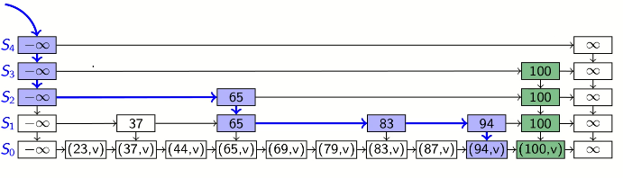
delete(k)
skiplist.delete(k):
auto P = get_predecessors(k)
while P:
auto &p = P.pop()
if p.after.key == k:
// removeauto &tmp = p.after
p.after = p.after.after
delete tmp
else: breakauto &p = topmost left sentinel
// remove "empty" levels until there is only one "empty" level// at topwhile p.below.after is inf-sentinel:
// the two top lists are both only sentinels, remove oneauto &tmp1 = p.below, &tmp2 = p.after.below
p.below = p.below.below
p.after.below = p.after.below.below
delete tmp1; delete tmp2
theorem. the average total number of nodes in a skiplist is 2n to contain n keys. proof. for one tower j (above a key k), we have P(tower j has height i)=2i1, then E(# nodes at level i in tower j)=12i1+0(1−2i1)=2i1. so E(# nodes at level i)=∑j=1n2i1=2in. for all towers, E(# nodes in all towers)=∑i≥02in=2n. □
theorem. an upper bound of average height of skiplist is logn to contain n keys. proof. define
Vi={01,level i is empty,else,i≥0. then height=∑i≥1Vi so E(height)=E(∑i≥1Vi)=∑i≥1E(Vi).
note since Vi∈{0,1} we have E(Vi)≤1.
also note Vi is less/eq than # of nodes at level i, hence E(Vi)≤E(# nodes at level i)=2in
combine them we have E(Vi)≤min(1,2in). if we let i0=logn, then ∑i≥1E(Vi)=∑i=1i0E(Vi)+∑i>i0E(Vi)≤∑i=1logn1+(21+41+81+...)=logn+1. □
reordering items
optimal static ordering
eg.
key
A
B
C
D
E
# times we access it
2
8
1
10
5
access-probability
2/26
8/26
1/26
10/26
5/26
if use regular linear search,
linear_search(A[n], k):
for i = 0, n-1: if A[i].key == k: returntruereturnfalse
to access ith element we make i comparisons
order A,B,C,D,E has expected comparisons: 1⋅262+2⋅268+3⋅261+4⋅2610+5⋅265=3.31
order D,B,E,A,C has expected comparisons: 1⋅2610+2⋅268+3⋅265+4⋅262+5⋅261=2.07
eg. suppose we have keys k1,...,kn with access probabilities p1+...+pn=1.
use regular linear search. (1) suppose distribution is uniform, then the average cost of search is 1⋅n1+2⋅n1+...+n⋅n1=2n+1.
(2) suppose p1=21,p2=221,...,pn−1=2n−11,pn=2n−11. then average cost is 1⋅21+2⋅221+...+(n−1)2n−11+n⋅2n−11<2. (constant time)
(3) suppose array is like (2), but in reverse order. the average cost is bn=1⋅2n−11+2⋅2n−11+...+(n−1)⋅221+n⋅21. note bn≤n(2n−11+2n−11+...+21)=n, and bn≥n⋅21. so bn∈Θ(n).
claim. over all possible static orderings, the one that sorts items by non-increasing access-probability minimizes the expected cost.
let L=k1...kn, p1,...,pn are access probilities. suppose L minimizes average cost in all n! permutations, then we claim p1≥p2≥...≥pn.
proceed by contradiction. suppose there exists 1≤i≤n−1 such that pi<pi+1. the average cost is c(L)=∑j=1npjj=∑j=1,i=j=i+1npjj+pii+pi+1(i+1). let L′ be obtained by swapping ki and ki+1 in L, then c(L′)=...+pi+1i+pi(i+1). then c(L)−c(L′)=pi+1−pi>0, this is a contradiction. □
dynamic ordering
if we do not know the access probabilities ahead of time
rule of thumb (temporal locality): a recently accessed item is likely to be used soon again
in list: always insert at the front
move-to-front heuristic (MTF): upon a sucessful search, move te accessed item to the front of the list (linked list)
for array, we should search and insert from the back so we have room to grow
transpose heuristic: upon a sucessful search, swap the accessed item with the item immediately preceding it
MTF works well in practice; can show MTF is "2-competitive": no more than twice as bad as the optimal static ordering
Week 7. June 23
lower bound for search
theorem. in the comparison model, Ω(logn) (on keys) comparisons are required to search a size-n dictionary. proof. the number of distinct answers is n+1 (indecies + not found) corresponding to leaves of the dicision tree, so the tree must have at least n+1 leaves, there are at most tree children for any node at any leaf, so the tree has height at least log3(n+1). □
interpolation search
assumes keys are integers
binary search: compare at index ⌊2ℓ+r⌋=ℓ+⌊21(r−ℓ)⌋
interpolation search: compare at index ℓ+⌊A[r]−A[ℓ]k−A[ℓ](r−ℓ)⌋
interpolation_search(A[n], k):
auto l = 0auto r = n-1while A[r] != A[l] and k >= A[l] and k <= A[r]:
auto m = l + floor( (k-A[l])/(A[r]-A[l])*(r-l) )
if A[m] < k:
l = m + 1elseif A[m] > k:
r = m - 1else:
return m
if A[l] == k:
return l
return/* not found */
works well if keys are uniformly distributed:
can show: the array in which we recurse into has expected size n
recurrence relation: T(avg)(n)=T(avg)(n)+Θ(1)
resolves to T(avg)(n)∈Θ(loglogn)
worst case: Θ(n) eg search n-1 in [1,2,3,...,n-1,n^100]
tries
standard tries
defns.
alphabet Σ is a finite set of characters
word w is a finite ordered sequence of characters in Σ
length of a word ∣w∣ is the number of characters
prefix of a string is S[0:n-1] is a substring S[0:i] for some 0<i<=n-1
prefix-free: there is no pair of binary strings in the dictionary where one is the prefix of the other
we use Σ={0,1} and words are bit-string; $ denotes end-of-word, not counted to the length.
trie (radix tree) is a dictionary of binary strings
based on bitwise comparisons; similar to radix sort, use bits not whole key
keys can have different number of bits
assumption: dictionary is prefix-free
always satisfied if all strings have same length
always satisfied if all strings end with a special end-of-word character
eg. a trie for S={00$,0001$,01001$,011$,01101$,110$,1101$,111$}
search(x)
start from most significant bit, follow link that corresponds to current bit
trie_search(root, x, d = 0):
// d: level of root, x: wordif root is leaf:
return root
else:
auto c = root.children[d]
if c != NULL:
return trie_search(c, x, d+1)
else:
/* not found */
insert(x)
search for x, not found
suppose we finish at node v that is missing a suitable child (not x has extra bits left)
expand the trie from the node v by adding necessary nodes that correspond to extra bits of x
delete(x)
search for x; let v be the leaf
delete v and all acestors of v until we reach an ancestor that has two children
time complexity of all operations: Θ(∣x∣) (length of string).
variation 1. no leaf labels
do not actual keys at the leaves
key is stoed implicitly through the characters along the path to the leaf (values still kept)
halves the amount of space
variation 2. allow proper prefixes
allow prefixes in dictionary
then internal nodes may also represent keys. a flag is used at each node to indicate whether this is a key
replaces the reference to the $-child with a flag; saves space
for bitstrings, looks like binary tree
variation 3. remove chains to labels (pruned trie)
stop adding nodes to trie as soon as the key is unique
a node haas a child only if it has at least two descendants
saves space if there are only few long bitstrings
(cannot combine with variation 1)
compressed tries (Patricia tries)
compress paths of nodes with only one child
each node stores an index indicating the next bit to be tested during a search
when arriving at a leaf, the input may be different from the stored key
a compressed trie storing n keys always has at most n-1 internal (non-leaf) nodes, 2n-1 nodes
search(x)
start from root, follow link corresponding to the current bit
if read a leaf, explicitly check whether word stored at leaf is x
else recurse on the new node and next bit of x
patricia_trie_search(root, x):
if root is leaf:
// lexicalreturn x == root.key ? root : /* not found */else:
auto d = root.index
if x.len < d:
/* not found */auto c = root.children[x[d]]
if c != NULL:
return patricia_trie_search(c, x)
else:
/* not found */
insert(x)
search for x, not found; let v be the node where the search ended
conceptually simplest:
uncompress path from root to v
insert x as in an uncompressed trie
compress paths from root to v and from root to x
also can only add needed nodes
delete(x)
search for x; let v be the leaf
delete v
compress along path to v whenever possible
time complexity of all operations: O(∣x∣).
multiway tries: larger alphabet
to represent strings over any fixed alphabet
any node will have at most ∣Σ∣+1 children (bitstring it is 2+1=3)
operations are same
runtime is O(∣x∣⋅(time to find appropriate child))
to store the children at each node
store array of size ∣Σ∣+1 at each node. O(1) time, O(|Σ|n) total space
store list of children at each node. total space O(n), time to find child increases to O(|Σ|)
use a good dictionary implementation at each node. total space O(n), time O(log|Σ|) or better.
Week 8. June 29
hashing
idea: map keys to integers in range {0,...,M-1} then use direct addressing
assumption: we know all keys come from some universe U (typically U=N)
design a hash function h:U→{0,1,...,M−1} (usually mod M)
store dictionary in hash table, an array T of size M
an item with key k should ideally be stored in slot T[h(k)].
collisions: h is not injective
eg. suppose pick n values from {0,...,M−1}, indepdently uniform distribution. what is probability of having a collision? p(n,M)=1−MMMM−1...MM−(n−1).
method 1: separate chaining
each slot stores a bucket containing 0 or more KVPs
if all keys hash to same slot then operation is Θ(n) on average despite average bucket size is still α
uniform hashing assumption: for any key k,0≤j≤M−1, h(k)=j happens with probability M1 independently of where the other keys hash to
under this, each key is expected to collide with Mn−1 other keys, and the average cost for search, delete is O(1+α)
re-hashing:
have to keep load factor α small
keep track of n and M throughout operations
if α gets too large, create new (twice as big) hash table, new hash function(s) and re-insert all items
rehashing costs Θ(M+n), but happens rarely enough so ignorable
we should also re-hash of α is too small (table too sparse), so that M∈Θ(n) throughout and space is always Θ(n)
if we maintain α∈Θ(1), then the average cost is O(1) and space is Θ(n)
method 2: probe sequencing
avoid links needed for chaining by permitting only one item per slot, but allowing a key k to be in multiple slots
search and insert follow a probe sequence of possible locations for key k until an empty spot is found
delete: cannot leave an empty spot behind; the next search might otherwise not go far enough
lazy deletion: mark spot as deleted, and continue searching past deleted spots
simplest: linear probing h(k,i)=(hhash(k)+i) mod M for some hash function h, and i goes from 0 to M-1
probe_sequence_insert(T, k, v):
for i = 0, M-1: // h is prob seqif T[h(k, i)] == NULLor T[h(k, i)] is "deleted":
T[h(k, i)] = {k, v}
returnthrow// fail to insert, need to rehash
probe_sequence_search(T, k):
for i = 0, M-1:
if T[h(k, i)] == NULL:
return/* not found */elseif T[h(k, i)] has key k:
return T[h(k, i)]
// ignore "deleted" and keep searchingreturn/* not found */
independent hash functions
some hashing methods require two hash functions
these two functions should be indepdedent, so random variables P(h0(k)=i),P(h1(k)=j) are independent
risk: using two modular hash-functions often lead to dependencies
better idea: use mulitplicative method for second hash function: h(k)=⌊M(kA−⌊kA⌋)⌋
A some float number
kA−⌊kA⌋∈[0,1) computes fractional part of kA
multiply with M to get a floating point number in [0,M), then round down to get integer in [0,M−1].
suggests A=25−1 (h values are spread)
method 3: double hashing
assume we have two hash independent functions h0,h1
assume h1(k)=0, h1(k) is coprime with the table-size M for all keys k
choose M prime
modify standard hash function to ensure h1 is not 0 eg h1(k)=1+⌊(M−1)(kA−⌊kA⌋)⌋
search, insert, delete same as linear probing, but with this probe sequence: h(k,i)=(h0(k)+i⋅h1(k)) mod M
why coprime: we want to cycle through all the table to insert items, if M is multiple of h1, we cannot.
eg.M=11,h0(k)=k mod 11,h1(k)=1+⌊10(0.618k−⌊0.618k⌋)⌋
method 4: cuckoo hashing
use two independent hash functions h0,h1 and two tables T0,T1
an item with key k can only be at T0[h0(k)] or T1[h1(k)]
usual search and delete take constant time
insert always initially puts new item into T0[h0(k)], if this position is occupied, kick out the other item and attempt to reinsert it to alternate position T1[h1(k)]. in case of failure, rehash with larger M and new hash functions
cuckoo_insert(k, v):
auto i = 0do:
if Ti[hi(k)] == NULL:
Ti[hi(k)] = {k, v}
return
swap({k, v}, Ti[hi(k)])
i = 1-i
while repeated less than 2n times
throw/* fail to insert, need rehashing */
observation: if we enter the insert loop 2n+1 times, we run forever.
two hash-tables need not be of the same size
load factor α=size of T0+ size of T1n=2Mn
if α is small enough the insertion has O(1) expected run time, requiring α<21
summary of open addressing strategies
for any open addresing scheme, must have load factor < 1; cuckoo requires < 1/2
average case cost
search (unsuccessful)
search (successful)
insert
linear probing
(1−α)21
1−α1
(1−α)21
double hashing
1−α1
α1log1−α1
1−α1
cuckoo hashing
1 (worst)
1 (worst)
(1−2α)2α
all operations have O(1) average case time if hash function is uniform and load factor is kept small. but worst case time is (usually) Θ(n).
universal hashing
goal: satisfy uniform hashing assumption (each hash-index is equally likely)
proving this is usually not possible, as it requires input distribution and hash function distirbution
can get good performance by choosing a hash function that is 1. unrelated to any possible pattern of data 2. depends on all parts of data
two methods: modular, multiplicative
use randomized hash function: h(k)=((ak+b) mod p) mod M, where p<M is prime, a,b∈[0,p−1],a=0 are random
can show for any fixed numbers, the prbability of a collision is at most M1 so expected run time is O(1) if load factor is small enough
advantages of balanced search trees:
O(logn) worst cast operations
does not require assumptions, special functions
predictable space usage (n nodes exactly)
never need to rebuild entire structure
ordered dictionary operations
advantages of hash tables:
O(1) operations
choose space-time tradeoff via load factor
cuckoo hashing achives O(1) worst case search and delete
Week 9. July 6
range search
range search: look for all items that fall within a given range
range can be open/closed interval
let s be the output-size, we need Ω(s) time simplt to report the items
using unosrted list/array/hash table: requires Ω(n) time, check for each time explicity whether it is in the range
using sorted array: done in O(logn+s) time
use binary search, find left endpoint i, and find right endpoint i'. report all items between A[i] and A[i']
using BST: done in O(height+s) more on this later
(orthogonal) multidimensional range search: given a rectangle A, find all points that lie within A
quadtrees
we have n points S={(x0,y0),...,(xn−1,yn−1)} in the plane
need a bounding box R: a square containing all points
can find R by computing minimum and maximum x and y values in S
the width/height of R should be power of 2
structure:
root r of the quadtree is associated with region R
if R contains 0 or 1 points, then root r is a leaf that stores the point
else split: partition R into 4 equal subspaces (quadrants) RNE,RNW,RSW,RSE
partition S into sets RNE,RNW,RSW,RSE of points in these regions
convention: points on split lines belong to right/top side
recursively build tree Ti for points in regoins and make them children of the root
eg.
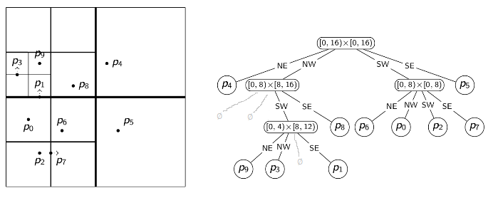
search: analogous to BST and tries
qtree_rangesearch(root, A):
// A: query rectangle// can determine result immediatelyif root.region ⊆ A:
yield all points below root
returnelseif root.region ⋂ A == Ø:
return// node is a boundary node, recurseif root is leaf:
auto &p = point stored in root
if p in A: yield p
else: returnelse:
for child in root.children: // 4 quadrants
yield from qtree_rangesearch(child, A)
we can compute the region each time instead of storing it.
insert:
search for the point
split the leaf while there are >= two points in one region
delete:
search for the point, remove it
if its parent has only one point left
analysis
can have very large height for bad distribution of points
spread factor of points S: β(S)=min distance between points in Ssidelength of R
can show height h of quadtree is Θ(logβ(S))
complexity to build initial tree: Θ(nh) worst-case
complexity of range search: Θ(nh) worst-case even if answer is empty
in practice much faster
summary
space potentially wastely, but good if points are well-distributed
variation: could stop splitting earlier and allow up to S points in a leaf (for some fixed bound S)
variation: store pixelated images by splitting until each regoin has the same color
when dimension is 1, quadtree degenerates to a trie
kd-trees
quadtrees split square into equal quadrants
(point-based) kd-tree splits the region such that (roughly) half the points are in each subtree
each node of the kd-tree keeps track of a splitting line in one dimension
2d: either vertical of horizontal
convention: points on split lines belong to right/top side
continue splitting, switching between vertical and horizontal lines, until every point is in a sperarate region
building tree
build kd-tree with initial split by x on points S:
if ∣S∣≤1 create a leaf and return
else X:=quickselect(S,⌊2n⌋) (select by x coordinate)
partition S by x-coordinate into Sx<X and Sx≥X
create left subtree recursively (splitting by y) for points Sx<X
create right subtree recursively (splitting by y) for points Sx≥X
building with initial y-split is symmetric. alter between x and y each time
runtime: Θ(nh) expectd time. can be reduced by presorting to Θ(nh+nlogn) worst case.
search: same as quadtrees
insert: search, insert as new leaf
delete: search, remove leaf
problem: after inserting/deleting, the split might no longer be at exact median and the height is no longer guaranteed to be O(logn). can be remedied by allowing a certain imbalance and re-building the tree when it becomes too unbalanced.
eg.
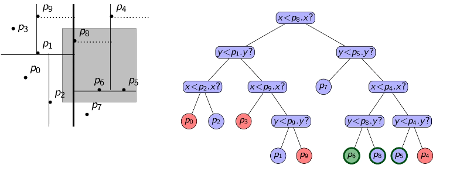
analysis
assume points are in general position: no two point shave the same x coordinate or y coordinate, for building the kd-tree
then the split always puts ⌊2n⌋ points on one side, and ⌈2n⌉ on the other
so height satisfies the sloppy recurrence h(n)≤h(2n)+1, reduces to h∈O(logn).
hence can build kd-tree in Θ(nlogn) time and O(n) space.
if points share coordinate, height can be infinite
for range seach:
complexity: Θ(s+Q(n))
s: number of results
Q(n): number of 'boundary' nodes
kdtree_rangesearch called
neither R⊆A nor R∩A=∅
can show Q(n) satisfies Q(n)≤2Q(4n)+O(1), resolving to Q(n)∈O(n)
so the run time is O(s+n)
higher dimensions
(assume general position and d is a constant):
storage: O(n)
height: O(logn)
construction time: O(nlogn)
range search time: O(s+n1−1/d)
range search of 1d BST
first consider 1d range search:
BST_rangesearch(root, x1, x2):
// returns keys in tree that are in range [x1, x2]if root == NULL:
return {}
elseif x1 <= root.key <= x2:
auto L = BST_rangesearch(root.left, x1, x2)
auto R = BST_rangesearch(root.right, x1, x2)
return L ∪ {root} ∪ R
elseif root.key < x1:
return BST_rangesearch(root.right, x1, x2)
elseif root.key > x2:
return BST_rangesearch(root.left, x1, x2)
observation: keys are reported in original sorted order; copies of duplicates are reported
eg. we can partition them into 3 parts
search for left boundary x1: this gives path P1
in case of equality, go left to ensure that we find all duplicates.
search for right boundary x2: this gives path P2
in case of equality, go right to ensure that we find all duplicates.
boundary nodes: nodes in P1 or P2 I
for each boundary node, test whether it is in the range.
outside nodes: nodes that are left of P1 or right of P2
these are not in the range, we stop the search at the topmost.
inside nodes: nodes that are right of P1 and left of P2
stop the search at the topmost (allocation node). all descendants of an allocation node are in the range. for a 1d range search, report them.
running time O(log n + s)
range tree
somewhat wasteful in space, but much faster range search
primary structure: balanced BST T that stores points and uses x coordinate as keys
each node v of T has an associate structure T(v)
let P(v) be all points in subtree v in T (including v)
T(v) stores P(v) in a balanced BST, using y coordinate as key
note: v is not necessarily the root of T(v)
eg.
space analysis
primary tree uses O(n) space
associate tree T(v) uses O(|P(v|) space
w∈P(v) means v is an ancestor of w in T
every node has O(logn) ancestors in T -> every node belongs to O(logn) sets P(v)
so ∑v∣P(v)∣≤n⋅O(logn)
so range tree with n points uses O(nlogn) space
dictionary operations
search: search by x coordinate in T (handle duplicates suitably)
insert: insert point by x coordinate into T. then walk up to the root and insert the point by y coordinate in all associate trees T(v) of nodes on path to the root
delete: analogous to insertion
problem: we want binary search trees to be balanced
makes insert/delete slow for AVL trees: a rotation at v changes P(v) and hence requires a rebuild of T(v)
can also allow some imbalance
range search:
range A = [x1, x2] x [y1, y2]
perform range search for the interval [x1, x2] in primary tree T (BST_rangesearch(T, x1, x2))
obtain boundary, topmost outside and allocation nodes
for every boundary node, test if the point is within A
for every inside node v:
let P(v) be the points in the subtree of v in T
we know that all x-coordinates of points in P(v) are within range
recall: P(v) is stored in T(v)
to find points in P(v) where the y-coordinates are within range as well, perform a range search in T(v): BST_RangeSearch(T(v),y1,y2)
range search run time:
O(logn) time to find nodes in primary tree
there are O(logn) allocation nodes
O(logn+sv) time for each allocation node v, where sv is the number of points in T(v) reported
two allocation nodes have to common point in their trees
every point is reported in at most one associate structure
∑allocation node vsv≤s
in total proportional to ∑allocation node v(logn+sv)∈O(log2n+s)
higher dimensions
space: O(nlogd−1n)
construction time: O(nlogdn)
range search time: O(s+logdn)
faster search, slower construction and more space than kd-trees.
Week 10. July 14
string matching
search for a string (pattern) in a large body of text
T[0:n-1]: the text/haystack being searched within
P[0:m-1]: the pattern/needle being searched for
return first i such that P[j]=T[i+j],∀0≤j≤m−1
the first occurence of P in T
if P does not occur in T, fail
defn. the empty string Λ is considered substring, prefix and suffix of any string.
pattern matching algorithms consist of guesses and checks:
a guess/shift is a position i such thaat P might start at T[i]. valid guesses (initially) are 0≤i≤n−m.
a check of a guess is a single position j with 0≤j<m where we compare T[i+j],P[j]. we must perform m checks for a single correct guesses and maybe fewer checks for incorrect ones.
brute force algorithm
brute_force_PM(T[n], P[m]):
for i = 0, n-m:
if T[i:i+m-1] == P:
return i
return FAIL
worst possible input: T=an,P=am−1b; worse case run time: Θ((n−m+1)m)=Θ(mn).
compute hash function for each guess, compare with pattern hash
if values are unequal, then the guess cannot be an occurence
remark: hash function can be h(T)=(Tn−1...T0)10mod97, treating each character as digit
rabin_karp_simple(T[n], P[m]):
auto hp = h(P)
for k = 0, n-m:
auto ht = h(T[k:k+m-1])
if ht == hp:
if T[k:k+m-1] == P:
return k
return FAIL
never misses a match since h(k1)=h(k2)→k1=k2
h(T[k:k+m-1]) depends on m characters -> Θ(m) time per shift -> slow
running time is Θ(mn) for search miss
using efficient rehash:
rabin_karp_fast(T[n], P[m]):
auto M = suitable prime number
// h = s => sn-1...x1x0 % Mauto hp = h(P)
auto ht = h(T[0:m-1])
auto s = 10^(m-1) % M
for i = 0, n-m:
if ht == hp:
if T[i:i+m-1] == P:
return i
// compute ht using previous ht// since T segment lost one char at front, add one next char at end// 1.
ht = ((ht - T[i]*s)*10 + T[i+m]) % M
return FAIL
choose "table size" M at random to be huge prime
expected run time: O(m+n)
worst case: Θ(mn), unlikely
extends to 2d patterns
remark. to explain 1. suppose h(x)=xmodM, Ti=ti⋅10m−1+...+ti+m−2⋅10+ti+m−1
in i th iteration. then for next iteration, Ti+1=ti+1⋅10m−1+...+ti+m−1⋅10+ti+m=(Ti−ti⋅10m−1)⋅10+ti+m
so we can compute hash of i+1th iteration based on previous hash: h(Ti+1)=((Ti−ti⋅10m−1)⋅10+ti+m)modM=((TimodM−ti⋅10m−1modM)⋅10+ti+m)modM=((h(Ti)−ti⋅(10m−1modM))⋅10+ti+m)modM
reverse-order searching: compare P with a guess moving backwards
bad character jumps: when a mismatch occurs, eliminate guesses where P does not agree with this char of T
in practice large part of T will not be looked at
we build the last-occurrence function L mapping Σ to indices
L(c) defined as
the largest index i such that P[i] = c
-1 if no such index exists
boyer_moore(T[n], P[m]):
auto L = last occurrences
auto k = 0while k <= n-m:
auto j = m-1while j >= 0:
if T[k+j] != P[j]:
break
--j
if j == -1:
return k
k = k + max(1, j-L(T[k+j]))
return FAIL
on typical english text the algorithm probes approximately 25% of the characters in T
worst-case run time with only bad-character heuristic is Θ(mn+∣Σ∣)
worst-case run time can be reduced to Θ(n+m+∣Σ∣) with good-suffix heuristic
it is the length of the longest prefix of P that is a suffix of P[1:j]
eg. compute a failure array for P = ababaca
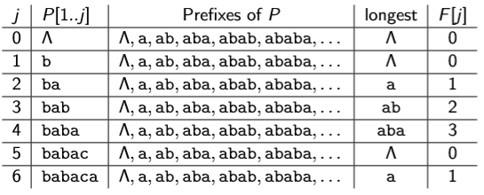
kmp(T[n], P[m]):
auto F = failure_array(P)
auto i = 0// current character of T to parseauto j = 0// current statewhile i < n:
if P[j] == T[i]:
if j == m-1:
return i-m+1else:
i = i+1
j = j+1else: // failureif j > 0:
j = F[j-1]
else:
i = i+1return FAIL
failure_array(P[m]):
auto F = newarray(m)
F[0] = 0auto i = 1auto j = 0while i < m:
if P[i] == P[j]:
j = j+1
F[i] = j
i = i+1elseif j > 0:
j = F[j-1]
else:
F[i] = 0
i = i+1return F
no more than 2m iterations for failure_array, no more than 2n iterations for kmp
run time: Θ(m+n)
preprocessing text: suffix trees
search for many patterns P within the same fixed text T
observation: P is a substring of T iff P is a prefix of some suffix of T
store all suffixes of T in a compressed trie
store indices to save space
text T has n characters -> n+1 suffixes -> size is Θ(n)
can build the suffix tree by inserting each suffix of T into a compressed trie, takes time Θ(n2) (O(n) exists)
assume we have a suffix tree of text T, to search for pattern P of length m:
assume P does not have $
P is the prefix of some suffix of T
for uncompressed trie
P exists in T iff P reaches a node in the trie
for compressed trie
if search fails due to "no such child", then P is not in T
if we reach end of P, say at node v, then jump to leaf ℓ in the subtree of v
else we reach a leaf ℓ=v with some characters in P left
should check is prefix
run time: O(|P|)
eg. search reaches a leaf with remaining parts of P, compare P with T to test whether P is suffix. in this case it is not so P does not exist in T
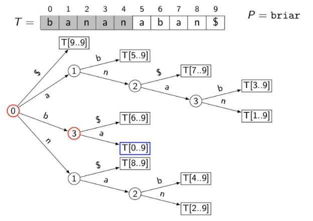
summary
brute-force
RK
BM
DFA
KMP
suffix trees
preprocess
O(m)
O(m+∣Σ∣)
O(m∣Σ∣)
O(m)
O(n2)→O(n)
search
O(nm)
O(n+m) (expected)
O(n) (often faster)
O(n)
O(n)
O(m)
extra space
O(1)
O(m+∣Σ∣)
O(m∣Σ∣)
O(m)
O(n)
Week 11. July 21
data compression
defn.compression ratio: ∣S∣log∣ΣS∣∣C∣log∣ΣC∣ (length of compressed word * log size of compressed alphabet / length of original word * log size of original alphabet)
types of compression:
logical vs physical
lossy vs lossless
for media files, lossy, local compression is useful. we concentrate on physical, loseless compression as it is general.
character-by-character encoding
we map each character in the source alphabet to a string in coded alphabet. define E:ΣS↦ΣC∗, for c∈ΣS, we call E(c) the codeword or c.
have 2 possibilities:
fixed-length code
eg. 7-bit ASCII code
variable-length code
eg. Morse code, UTF-8
encode(E, S[n]):
// E: encoding dictionary, S: text with characters in ΣSstring C
for i = 0, n-1:
C.append(E.search(S[i]))
return C
for decoding
it must map ΣC∗ to ΣS∗
the code must be uniquely decodable
false for Morse code, eg .--.--- decodes to WATT and ANO and WJ
we only consider prefix-free codes E: no codeword is a prefix of a another
this corresponds to a trie with characters of ΣS only at the leaves
the codeword need no end-of-string symbol $ is E is prefix-free
eg.
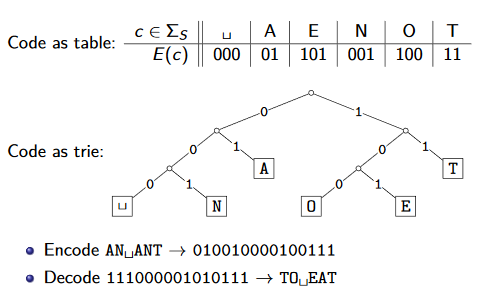
prefixfree_decode(T, C[n]):
// T: trie of a prefix-free code, C: text with characters in ΣCstring S
auto i = 0while i < n:
auto &r = T.root
while r is not leaf:
if i == n:
/*invalid encoding*/auto c = child of r that is labelled with C[i]
i = i+1
r = c
S.append(character stored at r)
return S
runtime is Θ(∣C∣).
we can also encode directly from the trie:
prefixfree_encode(T, S[n]):
// T: trie of a prefix-free code, S: text with characters in ΣSauto L = array of nodes in T indexed by ΣS
for leaf in T.leaves:
L[character at leaf] = leaf
string C
for i = 0, n-1:
auto w = ""auto v = L[S[i]]
// walk up the tree from leaf to get decoded portionwhile v is not root:
w.prepend(character from v to its parent)
v = v.parent
C.append(w)
return C
runtime is O(∣T∣+∣C∣), which is O(∣ΣS∣+∣C∣) if T is full
Huffman code
goal: find an encoding that is short
observation: some letters in Σ occur more often than others. so use shorter codes for more frequent characters.
for given source text S, determine the best trie (shortest coding text):
determine frequency of each character c∈Σ in S
for each c, create a height-0 trie holding c
tries have a weight: sum of frequencies of all letters in trie. initially these are just the character frequencies
find the two tries with the minimum weight
merge these tries with new interior node; new weight is the sum
repeat last two steps until there is only one trie left
encode text using this trie
huffman_encoding(S[n]):
auto f = array indexed by ΣS, initially all 0// O(|ΣS|)for i = 0, n-1: // O(n)
f[S[i]] += 1auto Q = min pq
for c in ΣS: // O(|ΣS|*log|ΣS|)if f[c] > 0:
Q.insert(single-node trie for c with weight f[c])
while Q.size > 1: // O(|ΣS|*log|ΣS|)auto &T1 = Q.deleteMin()
auto &T2 = Q.deleteMin()
Q.insert(trie with T1, T2 as subtries and weight = T1.weight+T2.weight)
auto &T = Q.deleteMin()
return prefixfree_encode(T, S), T // O(|ΣS|+|C|)
run time of encoding is O(∣ΣS∣log∣ΣS∣+∣C∣)
run time of decoding is O(∣C∣)
eg.
compression ratio: 11⋅log525⋅log2=0.97
run-length encoding
variable length code
multi-character encoding: multiple source-text characters receive one codeword
bitstring
idea:
give the first bit of S (0 or 1)
then give a sequence of integers indicating run lengths
we don't have to give the bit for runs since they alternate
Elias gamma coding: to encode k, add ⌊logk⌋ copies of 0, followed by the binary representation of k (which always start with 1)
k
⌊logk⌋
k in binary
encoding
1
0
1
1
2
1
10
010
3
1
11
011
4
2
100
00100
5
2
101
00101
...
eg. 00000 111 0000 encodes to 0534, can convert to 0 00101 011 00100 (fordecoding, consecutive x 0's means we read the following x+1 bits for length)
remark. a binary digit x has ⌊logx⌋+1 digits.
RLE_encoding(S[n]):
string C
C.append(S[0])
auto i = 0while i < n:
auto k = 1while i+k < n and S[i+k] == S[i]:
k = k+1
i = i+k
// compute and append elias gamma codestring K
while k > 1:
C.append(0)
K.prepend(k % 2)
k = floor(k/2)
K.prepend(1)
C.append(K)
return C
RLE_decoding(C):
string S
auto b = C.pop_front()
do:
auto l = 0while C.front() == 0: // length of base-2 number - 1
l = l+1
C.pop_front()
auto k = 1for _ = 1, l:
k = k*2 + C.pop_front() // construct count in decimalfor _ = 1, k:
S.append(b)
b = 1-b
while C is not empty
return S
// if pop is called when there are no bits, then C was not valid input
observation: an all-0 string of length n would be compressed to 2⌊logn⌋+2∈o(n) bits
usually, we are not that lucky
there is no compression until run-length k≥0
even expansion when run-length k=2 or 4
used in some image formats
can be used to larger alphabet (then the encoding of each run must also store the character)
can be adapted to encode only runs of 0
bzip2
uses text-transform: change input to different text that is not necessarily shorter, but has desirable qualities
T0→T1 Burrows-Wheeler transform
if T0 has repeated substrings, then T1 has long runs of characters
T1→T2 move-to-front transform
if T1 has long runs of characters, then T2 has long runs of 0s and skewed frequencies
T2→T3 modified RLE
if T2 has long runs of 0s, then T3 is shorter. skewed frequencies remain
T3→T4 Huffman encoding
compress well since frequencies are skewed
move-to-front transform:
MTF_encode(S):
auto L = array with ΣS in some pre-agreed, fixed order (usually ASCII)
forchar c in S:
yield index i such that L[i] = c
for j = i-1, 0, -1:
swap(L[j], L[j+1])
MTF_decode(C):
auto L = array with ΣS in some pre-agreed, fixed order (usually ASCII)
forint i in C:
yield L[i]
for j = i-1, 0, -1:
swap(L[j], L[j+1])
Burrows-Wheeler transform
idea:
permute the source text S: the coded text C has exact same letters but different order
goal: if S has repeated substrings, then C should have long runs of characters
need to choose the permutation carefully so we can decode correctly
detail:
assume source text S ends with end-of-word character $ that occurs nowhere else in S
a cyclic shift of S is the concatenation of S[i+1:n-1] and S[0:i] for some i<n
the encoded text C consists of the last characters of all the cyclic shifts of S after sorting them
eg. encode example
observe substring alf occurs three times and causes runs lll and aaa in C.
eg. decode example
BWT_decode(C[n]):
auto A = array(n)
for i = 0, n-1:
A[i] = (C[i], i) // store character and index
stable_sort(A)
for j = 0, n:
if C[j] == $: breakstring S
do:
j = A[j].second
S.append(C[j])
while C[j] != $
return S
encode cost O(n(n+∣ΣS∣)) using radix sort
can be done in O(n) assuming ∣ΣS∣=O(1)
sorting cyclic shifts of S is equivalanet to sorting the suffixes of S⋅S with length > n
can be done by traversing the suffix tree of S⋅S
decoding uses O(n+∣ΣS∣). both uses O(n) space.
they need all the text (no streaming possible). BWT is a block compression method.
Week 12. July 28
Lempel-Ziv-Welch
take advantages of repeated substrings without knowing them in advance
use adaptive encoding:
there is a fixed initial dictionary D0 (usually ASCII)
for i≥0, Di is used to determine ith output character
after writing the ith character to output, both encoder and decoder update Di to Di+1
eg. encoding example
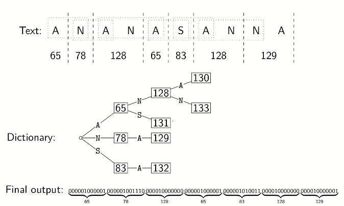
LZW_encode(S):
auto D = dictionary with ASCII in a trie
auto idx = 128while S is not empty:
auto &v = D.root
auto K = S.front()
// find longest existing prefixwhile v has child c labelled K:
v = c
S.pop_front()
if S is empty: break
K = S.front()
// ouput list of numbers (idx)// this is usually converted to a bit-string with fixed// length encoding using 12 bits (if too long, start from// beginning, not shown)
yield codenumber stored at v
if S is not empty:
create child of v labelled K with codenumber idx in D
idx++
LZW_decode(C):
auto D = dictionary maps from 0:127 to ASCII
auto idx = 128string S
auto code = C.pop_front()
auto s = D[code]
S.append(S)
while C is not empty:
auto sprev = s
code = C.pop_front()
if code < idx:
s = D[code]
elseif code == idx: // special situation
s = sprev + sprev[0]
else:
/*invalid*/
S.append(s)
D.insert(idx, sprev + s[0])
idx++
return S
encoding uses O(∣S∣) time and uses a trie of encoded substrings to store the dictionary
decoding uses O(∣S∣) time and uses an array indexed by codenumbers to store the dictionary
both only goes through the text once
summary
external memory
observation: accessing a single location in external memory automatically loads a whole block (page).
objective: minimize page loads
tree-based dictionaries have poor memory locality: if an operation accesses m nodes, then it must access m spaced-out memory locations. in AVL tree, Θ(log2n) pages are loaded in worst case. better solution: do more in single node
2-3 trees
is a balanced search tree.
structural properties:
every internal node is either
1-node: 1 KVP and 2 children
2-node: 2 KVPs and 3 children
the external nodes are NULL (no keys)
all external nodes are at the same level
order property: the keys at a node are between the keys in the subtrees
eg.
search(k)
twothreetree_search(k, root):
auto [c0,k1,...,kd,cd] = keys and children at v in order
if k >= k1:
auto i = max index such that ki <= k
if ki == k: return ki
else:
i = 0
twothreetree_search(k, ci)
insert(k, v)
search to find leaf l where the new key k belongs
add k and a NULL-child to ℓ. if ℓ now as 3 keys (overflow):
split ℓ into two nodes a, c with min and max key of ℓ
move median key b of ℓ into parent p of ℓ. also make a, c child of p
recurse in p if it now has overflow
delete(k)
as with BST, first swap the KVP k with its successor, so that it is now at a leaf ℓ
delete k and one NULL-child from ℓ
if ℓ now has 0 keys (underflow)
if ℓ is the root, delete it. else let p be the parent of ℓ
if some immediate sibling u is a 2-node, perform a transfer:
find the key kp in p that is between keys of ℓ and u
"rotate": move kp into ℓ, move adjacent KVP from u into p, and re-arrange children suitably
otherwise, merge ℓ and a 1-node sibling u:
find the key kp in parent p between keys of ℓ and u
combine ℓ and u into one node and move kp into it
recurse in p if it now has underflow
(a, b)-trees
special case: (2, 3)-tree
each internal node has at least a children, unless it is the root, the root has at least 2 children
each internal node has at most b children
if a node has k children, then it stores k-1 KVPs
external nodes store no keys and are same level
the keys in the node are between the keys in the corresponding children
if a≤2b+1, then search, insert, delete works like for 2-3 trees.
the height of tree with n KVPs is O(logan) and Ω(logbn).
B-trees
a B-tree of order m is a (⌈2m⌉,m)-tree. a 2-3 tree is a B-tree of order 3.
assume each node stores its KVPs and child-pointers in a dictionary that supports Θ(logm) search
so cost of search is Θ(logmnlogm)=Θ(logn).
Week 13. August 3
external sorting
given an array A of n numbers, sort them. n is huge and A is stored in blocks in external memory.
heapsort was optimal in RAM model, but accesses A at indices that are far apart -> one page load per access
Θ(nlogn) pageloads
mergesort adapts well.
Θ(Bnlogn) pageloads, where B is page size
it is better to use d-way merge
d_way_merge(S1, ..., Sd)
// S1,... are sorted setsauto P = new min_priority_queue
auto S = newsetfor i = 1, d:
P.insert(key=Si.first(), val=i)
while P is not empty:
auto (x, i) = P.deleteMin()
remove x from Si and append it to S
if Si is not empty:
P.insert(Si.first(), i)
return S
standard mergesort uses d=2
d > 2 can be used in RAM but extra time to find minimum in pqueue means overall runtime is no better
runtime is O(nlogd)
to sort a long array on the disk
load a slice of the array of size M into RAM, sort, copy back to disk, then load second subarray..., where M is the RAM size
use Θ(Bn) IO-operations
merge the first d≈BM−1 sorted runs using d-way-merge
keep merging the next runs to reduce # runs by factor of d -> one round of merging.
use Θ(Bn) IO-operations
logdMn rounds of merging create sorted array
total page loads: O(BnlogdMn)
observations:
Ω(Bn) IOs required to scan n elements
Ω(BnlogBMBn) IOs required to sort n elements with comparisons